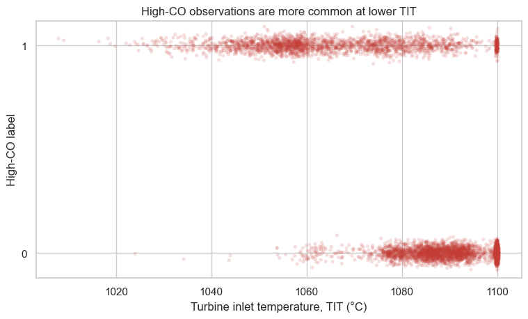
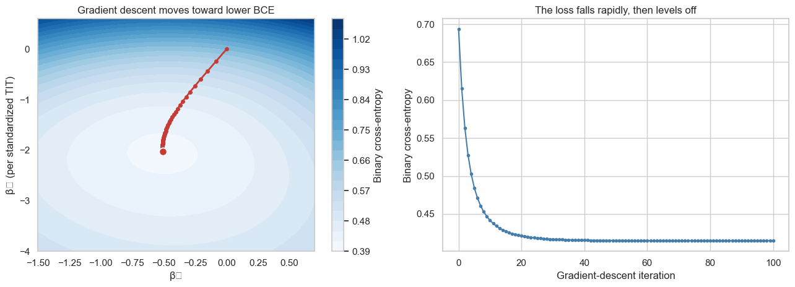
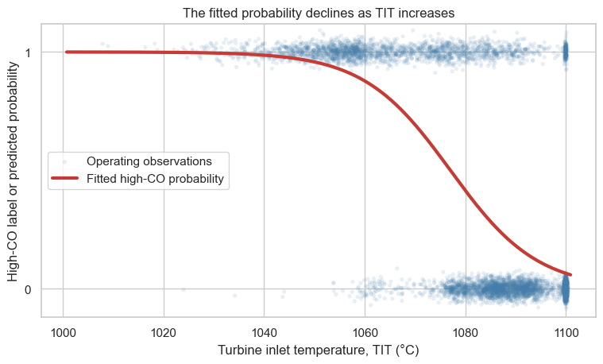

from pathlib import Path
from urllib.request import urlretrieve
import matplotlib.pyplot as plt
import numpy as np
import pandas as pd
import seaborn as sns
sns.set_theme(style="whitegrid", context="notebook")Logistic regression and gradient descent

In the likelihood notebook, we selected the probability that best explained a set of red/blue ticket draws. Here, we use the same maximum-likelihood idea to fit a logistic-regression model for gas-turbine operating observations.
In the data, each row records one operating observation. Our target is the course-defined high-CO label: it is 1 when CO is at least 2 mg/m³ and 0 otherwise. We will use turbine inlet temperature (TIT) as one feature and implement gradient descent ourselves.
1. Set up the turbine classification task
The same course dataset supported our regression examples. This time, the measured CO value has already been converted into a binary label, so we can focus on the probability model rather than on constructing the label.
DATA_URL = "https://raw.githubusercontent.com/changyaochen/MECE4520/master/site/data/gas-turbine-course.csv"
candidates = [
Path("../data/gas-turbine-course.csv"),
Path("site/data/gas-turbine-course.csv"),
Path("gas-turbine-course.csv"),
]
data_path = next((path for path in candidates if path.exists()), candidates[-1])
# In Google Colab, download the small course dataset if it is not already present.
if not data_path.exists():
urlretrieve(DATA_URL, data_path)
data = pd.read_csv(data_path)
model_data = data[["TIT", "CO", "high_co"]].dropna().copy()
print(f"Usable operating observations: {len(model_data):,}")
print(f"High-CO observations: {model_data['high_co'].sum():,} ({model_data['high_co'].mean():.1%})")
model_data.head()Usable operating observations: 36,733
High-CO observations: 14,270 (38.8%)| TIT | CO | high_co | |
|---|---|---|---|
| 0 | 1086.2 | 0.32663 | 0 |
| 1 | 1086.1 | 0.44784 | 0 |
| 2 | 1086.5 | 0.45144 | 0 |
| 3 | 1086.5 | 0.23107 | 0 |
| 4 | 1085.9 | 0.26747 | 0 |
A logistic model does not try to draw a straight line through 0/1 labels. Instead, it estimates the chance of a high-CO observation. The small vertical jitter below is only for visibility; the labels themselves remain 0 or 1.
plot_data = model_data.sample(n=min(6_000, len(model_data)), random_state=4520)
rng = np.random.default_rng(4520)
label_jitter = plot_data["high_co"] + rng.normal(0, 0.025, len(plot_data))
fig, ax = plt.subplots(figsize=(9, 4.8))
ax.scatter(
plot_data["TIT"],
label_jitter,
s=14,
alpha=0.16,
color="#c43c35",
edgecolor="none",
)
ax.set(
xlabel="Turbine inlet temperature, TIT (°C)",
ylabel="High-CO label",
yticks=[0, 1],
ylim=(-0.12, 1.12),
title="High-CO observations are more common at lower TIT",
)
plt.show()
2. A logistic probability model
Let \(y_i\) be the high-CO label for observation \(i\). We first standardize TIT, then map a linear score to a probability with the sigmoid function:
\[ \tilde{x}_i = \frac{\mathrm{TIT}_i-\overline{\mathrm{TIT}}}{s_{\mathrm{TIT}}}, \qquad z_i=\beta_0+\beta_1\tilde{x}_i, \qquad p_i=P(y_i=1\mid \tilde{x}_i)=\sigma(z_i)=\frac{1}{1+e^{-z_i}}. \]
Standardizing TIT is not a different model. It is a convenient re-expression of the same feature: \(\beta_1\) now describes a one-standard-deviation change in TIT, and a single learning rate can update both coefficients sensibly.
tit_mean = model_data["TIT"].mean()
tit_std = model_data["TIT"].std(ddof=0)
model_data["tit_standardized"] = (model_data["TIT"] - tit_mean) / tit_std
# The first column of X supplies the intercept; the second is standardized TIT.
X = np.column_stack([
np.ones(len(model_data)),
model_data["tit_standardized"].to_numpy(),
])
y = model_data["high_co"].to_numpy(dtype=float)
def sigmoid(z: float | np.ndarray) -> float | np.ndarray:
"""Map linear score(s) to probability values.
Args:
z: A scalar or NumPy array of linear scores.
Returns:
The corresponding probability or array of probabilities in [0, 1].
"""
return 1 / (1 + np.exp(-z))
print(f"Mean TIT: {tit_mean:.2f} °C")
print(f"Standard deviation of TIT: {tit_std:.2f} °C")
print(f"Design-matrix shape: {X.shape}")Mean TIT: 1081.43 °C
Standard deviation of TIT: 17.54 °C
Design-matrix shape: (36733, 2)3. Turn likelihood into a loss function
For independent binary observations, maximizing the likelihood is equivalent to minimizing the average negative log-likelihood, also called binary cross-entropy:
\[ \mathcal{L}_{\mathrm{BCE}}(\boldsymbol{\beta}) =-\frac{1}{n}\sum_{i=1}^{n} \left[y_i\log(p_i)+(1-y_i)\log(1-p_i)\right]. \]
Smaller values mean that the model assigns higher probability to the labels we actually observed. To minimize this loss, we also need its gradient with respect to the coefficient vector:
\[ \mathbf{p}=\sigma(\mathbf{X}\boldsymbol{\beta}), \qquad \nabla\mathcal{L}_{\mathrm{BCE}}(\boldsymbol{\beta}) =\frac{1}{n}\mathbf{X}^{\mathsf{T}}(\mathbf{p}-\mathbf{y}). \]
Here, \(\mathbf{X}\) is the design matrix, \(\mathbf{p}\) contains the predicted probabilities, and \(\mathbf{y}\) contains the observed 0/1 labels. The vector \(\mathbf{p}-\mathbf{y}\) measures each prediction’s error; multiplying by \(\mathbf{X}^{\mathsf{T}}\) combines those errors into one update direction for the two coefficients.
The loss_and_gradient function below follows that sequence:
- Compute one linear score for each observation.
- Transform the scores into predicted probabilities with the sigmoid.
- Compute and average the per-observation binary cross-entropy losses.
- Combine the probability errors into the gradient above.
The code below follows the displayed expression directly. It clips probabilities only to prevent taking the logarithm of 0 if floating-point roundoff produces an extreme value of exactly 0 or 1.
def loss_and_gradient(
beta: np.ndarray, X: np.ndarray, y: np.ndarray
) -> tuple[float, np.ndarray]:
"""Compute binary cross-entropy and its gradient.
Args:
beta: Current intercept and standardized-TIT slope, shape (2,).
X: Design matrix with intercept and standardized-TIT columns.
y: Observed high-CO labels, encoded as zeros and ones.
Returns:
A pair containing the average binary cross-entropy and its
gradient with respect to `beta`.
"""
# One linear score and one predicted probability per observation.
scores = X @ beta
probabilities = sigmoid(scores)
# Keep logarithms defined if floating-point roundoff produces 0 or 1.
safe_probabilities = np.clip(probabilities, 1e-12, 1 - 1e-12)
per_observation_loss = -(
y * np.log(safe_probabilities)
+ (1 - y) * np.log(1 - safe_probabilities)
)
loss = np.mean(per_observation_loss)
# Weight probability errors by the feature values, then average them.
probability_errors = probabilities - y
gradient = X.T @ probability_errors / len(y)
return float(loss), gradient
initial_beta = np.array([0.0, 0.0])
initial_loss, initial_gradient = loss_and_gradient(initial_beta, X, y)
print("At β₀ = β₁ = 0, every predicted probability is 0.5.")
print(f"Initial BCE: {initial_loss:.4f}")
print(f"Gradient: {initial_gradient}")At β₀ = β₁ = 0, every predicted probability is 0.5.
Initial BCE: 0.6931
Gradient: [0.11152098 0.31981404]4. One gradient-descent update
The gradient introduced above points in the direction of greatest local increase in the loss. To decrease the loss, we step in the opposite direction:
\[ \boldsymbol{\beta}^{(t+1)} =\boldsymbol{\beta}^{(t)}-\eta\nabla\mathcal{L}_{\mathrm{BCE}} \left(\boldsymbol{\beta}^{(t)}\right). \]
Here, \(\eta\) is the learning rate. It controls how far one update travels. We begin at \((0,0)\) and use \(\eta=0.75\).
learning_rate = 0.75
one_step_beta = initial_beta - learning_rate * initial_gradient
one_step_loss, _ = loss_and_gradient(one_step_beta, X, y)
print(f"Start: β = {initial_beta}, BCE = {initial_loss:.4f}")
print(f"After one step: β = {one_step_beta.round(3)}, BCE = {one_step_loss:.4f}")Start: β = [0. 0.], BCE = 0.6931
After one step: β = [-0.084 -0.24 ], BCE = 0.61515. Repeat the updates
A complete gradient-descent fit repeats the same calculation many times. The history records the coefficient values and loss after every iteration, including the starting point.
For a fixed learning rate, the algorithm is:
- Start with an initial coefficient vector \(\boldsymbol{\beta}^{(0)}\).
- Compute the predicted probabilities and the loss gradient.
- Move one step opposite the gradient.
- Repeat until the loss and coefficients no longer change much.
def gradient_descent(
X: np.ndarray,
y: np.ndarray,
learning_rate: float = 0.75,
n_steps: int = 100,
) -> tuple[np.ndarray, pd.DataFrame]:
"""Fit logistic-regression coefficients with gradient descent.
Args:
X: Design matrix with intercept and standardized-TIT columns.
y: Observed high-CO labels, encoded as zeros and ones.
learning_rate: Size of each update opposite the gradient.
n_steps: Number of coefficient updates to perform.
Returns:
A pair containing the final coefficient vector and a table with
the coefficient values and BCE at every iteration.
"""
beta = np.zeros(X.shape[1])
history = []
for iteration in range(n_steps + 1):
loss, gradient = loss_and_gradient(beta, X, y)
history.append({
"iteration": iteration,
"beta_0": beta[0],
"beta_1": beta[1],
"bce": loss,
})
if iteration < n_steps:
beta = beta - learning_rate * gradient
return beta, pd.DataFrame(history)
beta_hat, history = gradient_descent(X, y, learning_rate=learning_rate, n_steps=100)
history.iloc[[0, 1, 2, 5, 10, 25, 50, 100]].round(4)| iteration | beta_0 | beta_1 | bce | |
|---|---|---|---|---|
| 0 | 0 | 0.0000 | 0.0000 | 0.6931 |
| 1 | 1 | -0.0836 | -0.2399 | 0.6151 |
| 2 | 2 | -0.1516 | -0.4353 | 0.5632 |
| 5 | 5 | -0.2904 | -0.8464 | 0.4845 |
| 10 | 10 | -0.4055 | -1.2376 | 0.4415 |
| 25 | 25 | -0.4978 | -1.7219 | 0.4182 |
| 50 | 50 | -0.5102 | -1.9517 | 0.4150 |
| 100 | 100 | -0.5082 | -2.0307 | 0.4147 |
With two coefficients, we can view the loss as a surface. The contour plot below is a top-down view: lighter contours have lower binary cross-entropy. The red path shows the successive gradient-descent estimates.
beta_0_values = np.linspace(-1.5, 0.7, 41)
beta_1_values = np.linspace(-4.0, 0.6, 41)
loss_surface = np.empty((len(beta_1_values), len(beta_0_values)))
for row, beta_1 in enumerate(beta_1_values):
for column, beta_0 in enumerate(beta_0_values):
loss_surface[row, column], _ = loss_and_gradient(
np.array([beta_0, beta_1]), X, y
)
fig, axes = plt.subplots(1, 2, figsize=(13, 4.8))
contours = axes[0].contourf(
beta_0_values, beta_1_values, loss_surface, levels=22, cmap="Blues"
)
axes[0].plot(history["beta_0"], history["beta_1"], color="#c43c35", linewidth=2)
axes[0].scatter(history["beta_0"], history["beta_1"], color="#c43c35", s=16, zorder=3)
axes[0].scatter(beta_hat[0], beta_hat[1], color="#c43c35", edgecolor="white", linewidth=1.3, s=80, zorder=4)
axes[0].set(
xlabel="β₀",
ylabel="β₁ (per standardized TIT)",
title="Gradient descent moves toward lower BCE",
)
fig.colorbar(contours, ax=axes[0], label="Binary cross-entropy")
axes[1].plot(history["iteration"], history["bce"], color="#457eaa", marker="o", markersize=3)
axes[1].set(
xlabel="Gradient-descent iteration",
ylabel="Binary cross-entropy",
title="The loss falls rapidly, then levels off",
)
plt.tight_layout()
plt.show()/var/folders/ck/6xgx96j15vd6tcwzl68twbpc0000gn/T/ipykernel_43232/43750391.py:33: UserWarning: Glyph 8320 (\N{SUBSCRIPT ZERO}) missing from font(s) Arial.
plt.tight_layout()
/var/folders/ck/6xgx96j15vd6tcwzl68twbpc0000gn/T/ipykernel_43232/43750391.py:33: UserWarning: Glyph 8321 (\N{SUBSCRIPT ONE}) missing from font(s) Arial.
plt.tight_layout()
/Users/changyaochen/Projects/MECE4520/.venv/lib/python3.11/site-packages/IPython/core/pylabtools.py:170: UserWarning: Glyph 8320 (\N{SUBSCRIPT ZERO}) missing from font(s) Arial.
fig.canvas.print_figure(bytes_io, **kw)
/Users/changyaochen/Projects/MECE4520/.venv/lib/python3.11/site-packages/IPython/core/pylabtools.py:170: UserWarning: Glyph 8321 (\N{SUBSCRIPT ONE}) missing from font(s) Arial.
fig.canvas.print_figure(bytes_io, **kw)
6. Return to the raw TIT scale
The optimization used standardized TIT, but we can draw the fitted probability curve against the original TIT values. If
\[ p_i=\sigma(\beta_0+\beta_1\tilde{x}_i), \]
then the equivalent raw-TIT coefficients are
\[ b_1=\frac{\beta_1}{s_{\mathrm{TIT}}}, \qquad b_0=\beta_0-\frac{\beta_1\overline{\mathrm{TIT}}}{s_{\mathrm{TIT}}}. \]
The fitted curve gives a probability, not a promise that each individual 0/1 observation will match the curve.
raw_slope = beta_hat[1] / tit_std
raw_intercept = beta_hat[0] - beta_hat[1] * tit_mean / tit_std
print(f"Standardized-scale fit: β₀ = {beta_hat[0]:.3f}, β₁ = {beta_hat[1]:.3f}")
print(f"Raw-TIT fit: log-odds = {raw_intercept:.3f} + ({raw_slope:.5f}) × TIT")
tit_grid = np.linspace(model_data["TIT"].min(), model_data["TIT"].max(), 400)
standardized_grid = (tit_grid - tit_mean) / tit_std
probability_grid = sigmoid(beta_hat[0] + beta_hat[1] * standardized_grid)
fig, ax = plt.subplots(figsize=(9, 4.8))
ax.scatter(
plot_data["TIT"],
label_jitter,
s=14,
alpha=0.12,
color="#457eaa",
edgecolor="none",
label="Operating observations",
)
ax.plot(tit_grid, probability_grid, color="#c43c35", linewidth=3, label="Fitted high-CO probability")
ax.set(
xlabel="Turbine inlet temperature, TIT (°C)",
ylabel="High-CO label or predicted probability",
yticks=[0, 1],
ylim=(-0.12, 1.12),
title="The fitted probability declines as TIT increases",
)
ax.legend()
plt.show()Standardized-scale fit: β₀ = -0.508, β₁ = -2.031
Raw-TIT fit: log-odds = 124.725 + (-0.11580) × TIT
Try it
Change the learning rate in the starter cell below. A smaller value makes slower progress; a much larger value can overshoot the low-loss region. Compare the final loss with the one above.
# Try it: fit again with a smaller learning rate.
# _, slower_history = gradient_descent(X, y, learning_rate=0.15, n_steps=100)
# slower_history.tail()